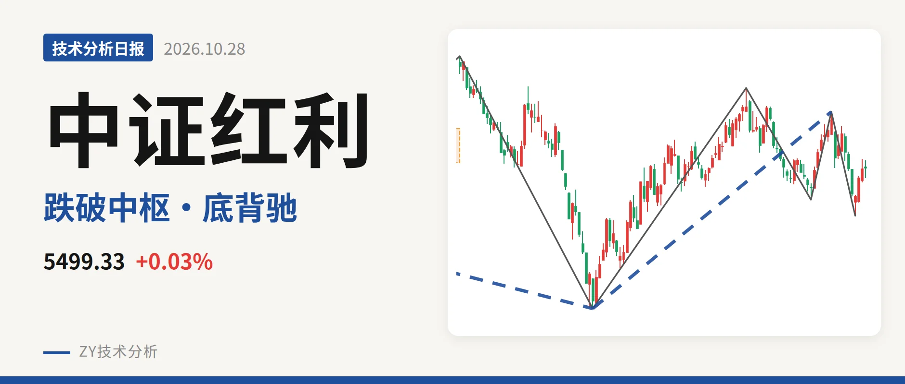
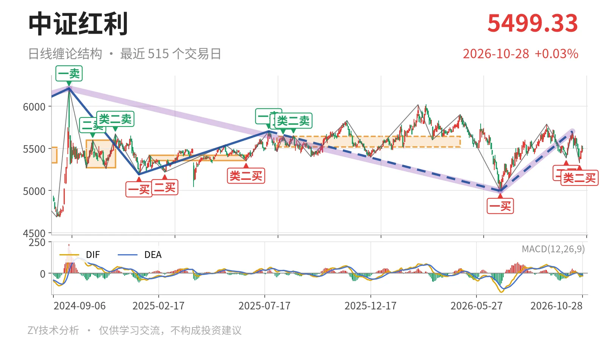
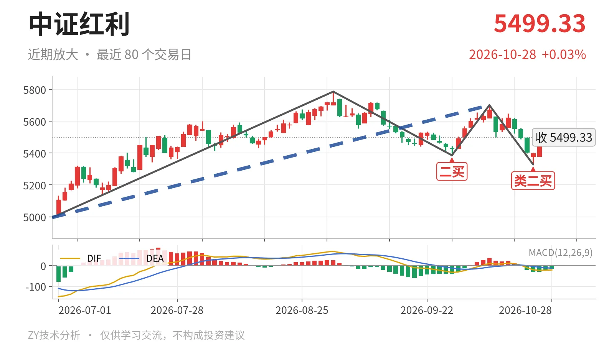

中证红利｜底背驰反抽 5518点分三卖

最近日线中枢 5518.46—5639.99点，收盘位于中枢之下
一句话：底背驰后反抽未完，站不上5518点则三卖结构压制。
🌊 走势结构：更大级别仍处下跌段后的反弹中
更大级别最近三段里，2024年10月8日至2026年6月30日的下跌走势和6月30日至10月14日的上涨走势都没有结束，当前是下跌主导后的修复段。6月30日日线一买4995.49点后，反弹至10月14日最高5701.06点，上涨14.1%。日线线段上，6月30日至10月14日的上涨线段还在延续，但10月14日至10月23日的下跌笔已把低点压到5328.30点。10月26日至10月28日只有3根K线，高点5532.45点、低点5375.84点，最新收在5499.33点，反弹尚未成笔。线段级两个买点分别在2022年11月1日4541.71点、2023年10月23日4894.86点，当前价格仍在这两个位置上方，大级别下方结构未破坏。

📍 中枢与位置：价格落在最近中枢下沿下方
最新收盘5499.33点低于最近日线笔中枢下沿5518.46点约19点，幅度0.3%。该中枢区间为 5518.46—5639.99点，中轴5579点，且尚未完成。下方旧的中枢上沿在5416.65点。价格站在5416点上方，却没能回到5518点上方，处于两个日线笔中枢之间的夹层。从全程笔中枢中轴看，2025年8月的5579点高于2025年1月的5385点，中枢上移后价格没能站稳下沿，回落到了夹层里。
🔁 买卖点：类二买未破，但买点没有抬高
日线笔级别最近的买点为6月30日一买4995.49点、9月29日二买5386.04点、10月23日类二买 5328.30点。类二买低于二买，买点没有一底比一底高。10月23日类二买所在下跌笔已经结束，后续3根K线未创5328点以下新低，所以该买点暂时仍是日线笔级别。若再跌破5328点，这个类二买就只对应更小级别，日线结构要下看4995点附近。

⚡ 背驰：最近下跌笔呈“新低不新弱”
最有力的一组对比是9月1日至9月29日下跌笔与10月14日至10月23日下跌笔。前者低点5386.04点，绿柱面积561，DIF低点-32.7；后者低点5328.30点创了新低，但绿柱面积缩到53，DIF低点收敛到-20.4。价格新低而动能没有同步放大，属于日线笔级别底背驰。最新MACD的DIF为-21.1，仍在零轴下，因此这个背驰只给反抽提供条件，不改变零轴下的偏空背景。
🎯 关键位置观察：站不上5518点，就是三卖结构
上方第一观察位是 5518点 一线，也就是最近日线笔中枢下沿。反抽若不能回到5518点上方，结构上构成对最近日线笔中枢的三卖，下方先看5375点附近，再看5328点附近。若重新站上5518点，这轮回落更可能只是中枢扩展，价格仍围绕5579点中轴震荡。综合看，价格在中枢下沿之下，DIF在零轴之下，日线结构偏弱；但底背驰明显，短线处于反抽与压制并存的局面，结构中性偏弱。
⚠️ 本文为基于公开行情数据的缠论技术结构记录，由程序自动计算并生成，仅供学习交流，不构成任何投资建议。市场有风险，投资需谨慎。